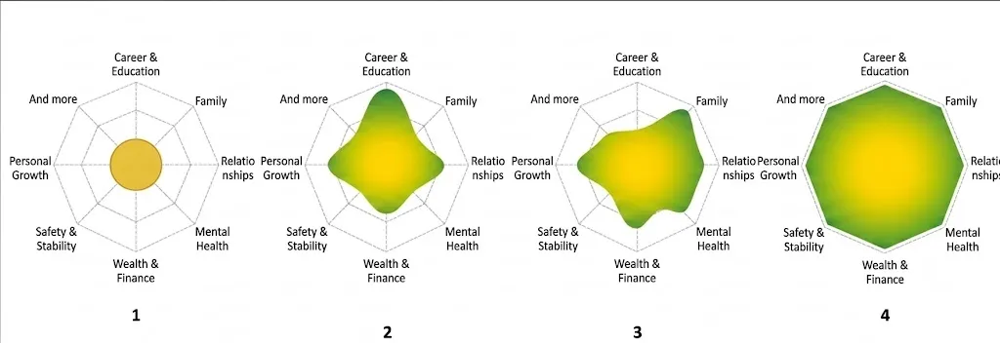

We often ignore the true relationship between success and happiness and even use these words interchangeably. It is intuitive to assume that a successful person must also be a happy person. However, these terms represent two fundamentally different ideas. A person may be highly successful according to conventional standards and yet feel unhappy. There are many examples in real life. We can refer to numerous famous actors, athletes, writers, and artists who excelled in their careers but eventually struggled profoundly with their mental well-being, some even ending their own lives. Ironically, some people may not excel in every aspect of their lives but still experience a deep sense of happiness and fulfillment.
Success is frequently associated with measurable achievements, such as educational attainment, career advancement, financial stability, or social recognition. Happiness, on the other hand, is a more complex concept that appears to emerge from a broader and, in my view, more balanced set of life experiences. Being physically and mentally healthy, feeling safe and secure, and maintaining strong relationships with family and friends are all important aspects of happiness. Maslow’s hierarchy of needs illustrates the importance and priority of these elements very well. However, I believe we can also examine them from another perspective: balance. To illustrate this idea, imagine that each person’s life can be represented as a shape extending in different directions. Each direction corresponds to an important domain of life, such as career and education, relationships, health, financial security, personal development, and other factors that people value. The total area of this shape represents a person’s success. As an individual develops in any domain, the area expands. Someone who excels professionally may have substantial growth in the direction of career achievement. Another person may devote most of their energy to nurturing strong family ties and friendships, resulting in greater expansion in the direction of relationships. In an idealized world, this shape should resemble a large and perfectly symmetric circle, indicating balanced growth across all important dimensions of life. Reality, however, is rarely so simple. Most people exhibit irregular and asymmetric patterns of development. Their lives expand more in some directions than in others. Some individuals may focus intensely on several aspects simultaneously, while others may sacrifice one domain in pursuit of another. We all know people who have compromised their health, relationships, or personal well-being in order to excel professionally. Whether these sacrifices are made consciously or unconsciously is not the subject of this discussion.
I believe this leads to an important distinction: a large area alone does not guarantee happiness. A person may achieve extraordinary success in a single domain while neglecting others that are equally essential to well-being. Likewise, balance alone may not be sufficient. A perfectly balanced but very small circle may represent a stable life, yet it may still lack the opportunities, security, or fulfillment necessary for happiness. Therefore, happiness may be understood as the combination of breadth and balance: a life that not only expands substantially but also develops harmoniously across multiple dimensions. In this sense, happiness is not merely the pursuit of greater success; rather, it is the pursuit of a meaningful equilibrium among the elements that make life worth living.

In fact, this entire idea emerged from reflecting on the experience of immigration. Millions of people leave their home countries every year in search of a better life. Some flee war and persecution, while others escape economic hardship, political instability, or the lack of opportunities. Almost all of them hope to build a more successful future — for themselves or for their families. Many immigrants eventually achieve exactly what they set out to accomplish. They obtain better jobs, higher incomes, safer neighborhoods, better education, and greater financial security. From the perspective of conventional success, they have expanded their circle considerably. Yet this success often comes at a cost. They leave behind their parents, siblings, lifelong friends, and the communities in which they felt understood. They lose traditions that were woven naturally into everyday life, familiar streets that carried memories, and social networks that took decades to build. They exchange a place where they belonged for one where they must gradually build a new sense of belonging. Perhaps, years ago, they could casually gather with close friends, drink a simple cup of tea, laugh, and feel completely at home. Today, they may be able to afford an expensive drink in a beautiful café, yet they often drink it alone or with people with whom they have not yet formed the same deep and meaningful connections. Materially, life may have improved, while emotionally, some parts of life have become smaller. Viewed through the framework proposed in this article, immigration often extends the shape of life in only a few directions. Career opportunities, education, safety, and financial stability may grow substantially, while family relationships, lifelong friendships, community, identity, and the feeling of belonging may contract or grow much more slowly. The overall area may become larger, but the shape may also become more asymmetric. Of course, life is not the same for everyone. Some immigrants are unable to achieve the goals that motivated their migration, despite tremendous effort and sacrifice. Others gradually rebuild their social circles, establish deep relationships, and create a new sense of home. Those who migrate at younger ages often have more time and flexibility to adapt, allowing them to expand their lives more harmoniously across multiple dimensions. This observation is what inspired the central idea of this discussion. Perhaps happiness should not be measured solely by how much we expand our lives, but also by how we expand them. The question is not simply whether our circle becomes larger, but whether it grows in a way that preserves the balance among the dimensions that make life meaningful. A larger but distorted shape may represent remarkable success, yet a larger and more balanced one is far more likely to represent genuine happiness.
Perhaps the challenge of modern life is not learning how to become more successful, but learning how to grow without losing the balance that allows success to translate into happiness.